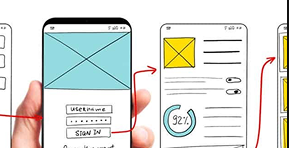
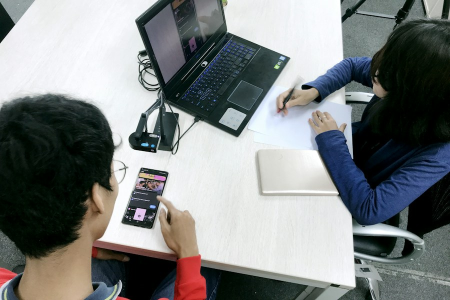
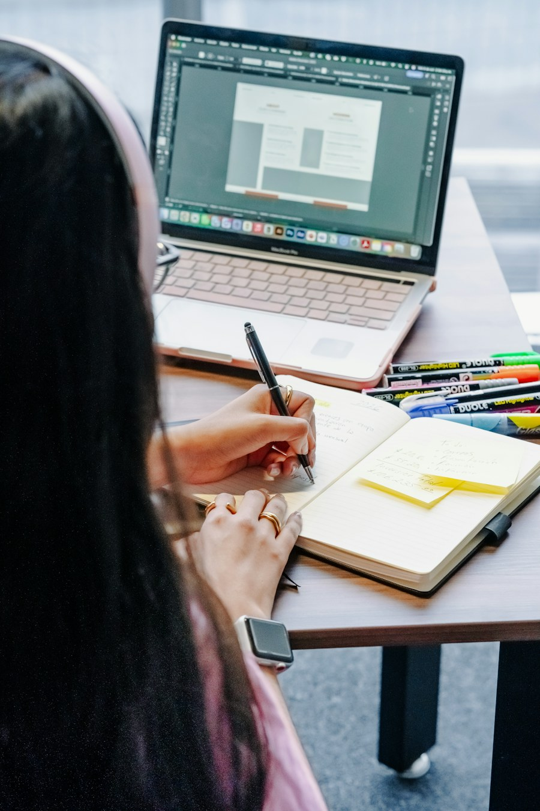
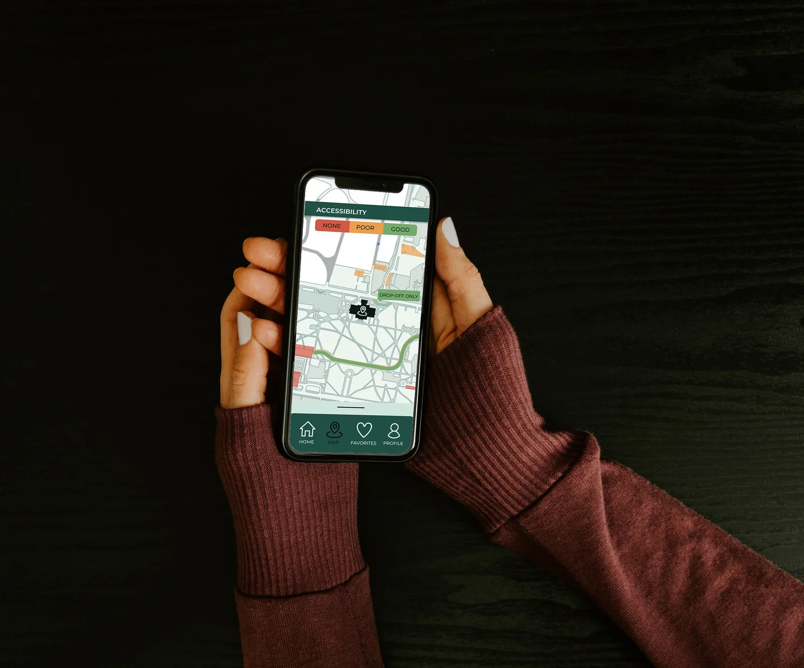

UX-design i utvikling: fra innsikt til løsning
En praktisk guide til å gjøre brukerinnsikt om til gode valg i et produktteam.

Gode ideer er til for å deles. Finn inspirasjon fra kolleger, eller legg til en artikkel du tror andre vil like.
En praktisk guide til å gjøre brukerinnsikt om til gode valg i et produktteam.

Se hvordan enkle skisser gjør det lettere å få tilbakemeldinger før vi bygger ferdig en løsning.

Du trenger ikke et stort testoppsett for å lære av brukerne. Start med korte samtaler og konkrete oppgaver.

Gode knappe- og feilmeldinger gjør digitale tjenester enklere å forstå. Her er en praktisk sjekkliste.

Noen tidlige designvalg gjør en løsning bedre for flere. Se hva teamet kan sjekke allerede i skissefasen.
Ingen artikler funnet. Prøv et annet søk eller filter.